Mission
Robotic above-ground mine detection with real-time hazard visualization and GPS-based location tracking for soldier awareness and humanitarian demining.
Engineering Portfolio
Purdue Mechanical Engineering | Class of 2027
Mechanical Engineering student focused on building and analyzing physical systems to survive real use.
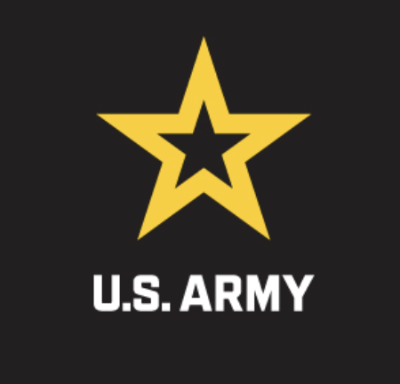
U.S. Army DEVCOM C5ISR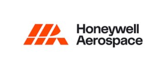
Honeywell Aerospace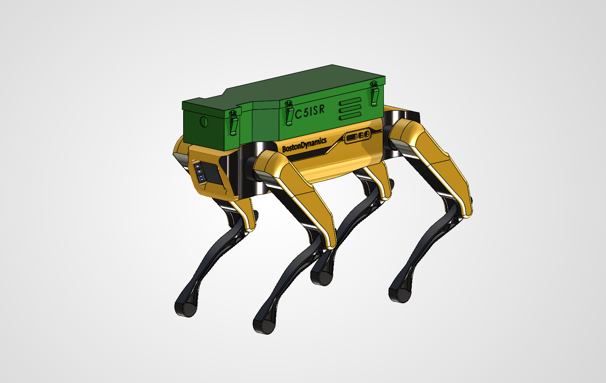
Robotic above-ground mine detection with real-time hazard visualization and GPS-based location tracking for soldier awareness and humanitarian demining.
Owned the physical payload system: CAD, mounting, internal architecture, component packaging, wiring layout, cooling, mass/CG, prototyping, and integration.
Built and demonstrated the working prototype to Army leadership to support future funding, iteration, and deployment.
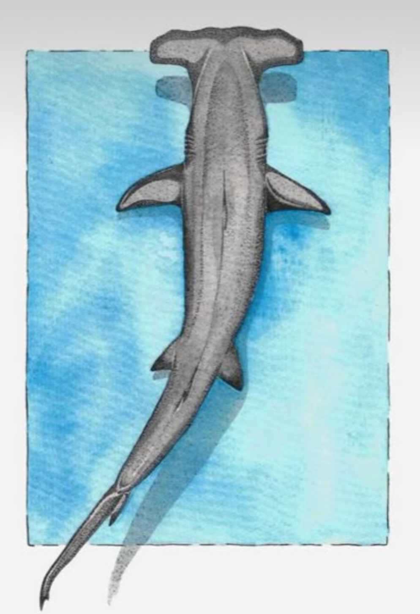
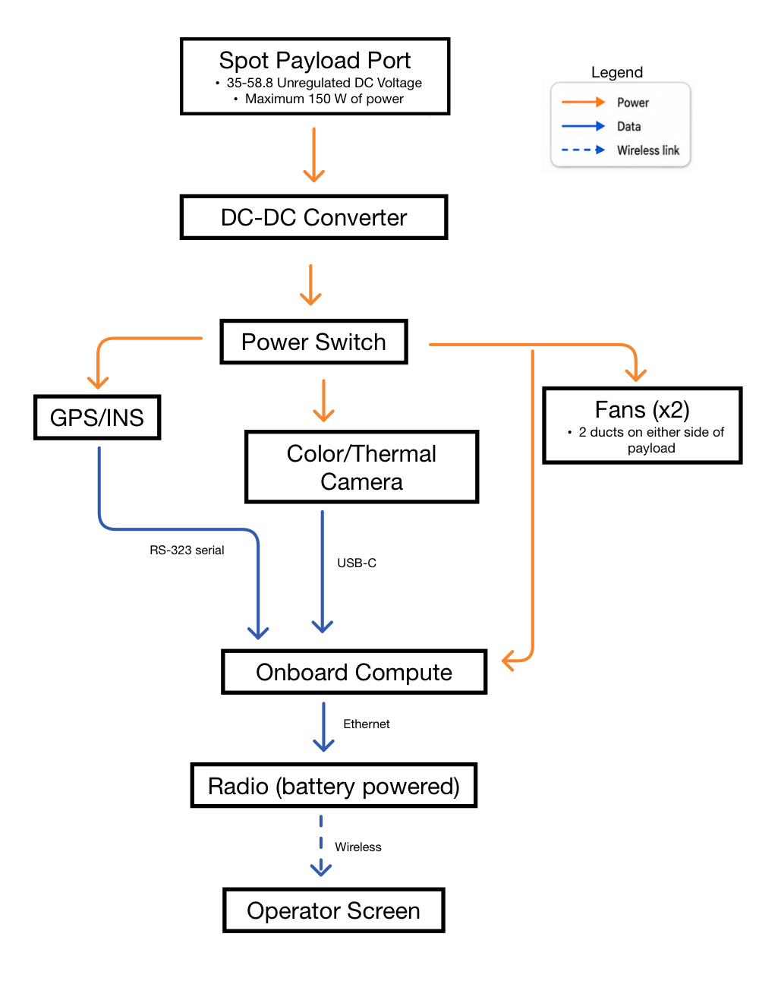
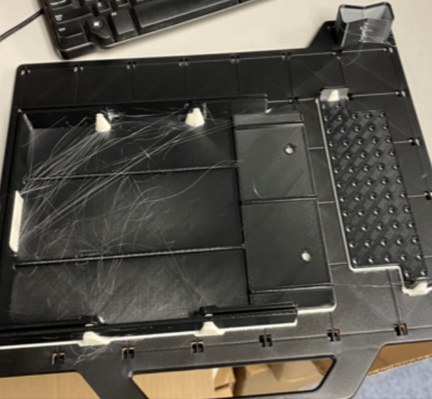
Created detailed manufacturing drawings and sheet-metal-ready CAD so the payload box could move from 3D-printed prototype to mass-produced with bent sheet-metal fabrication.
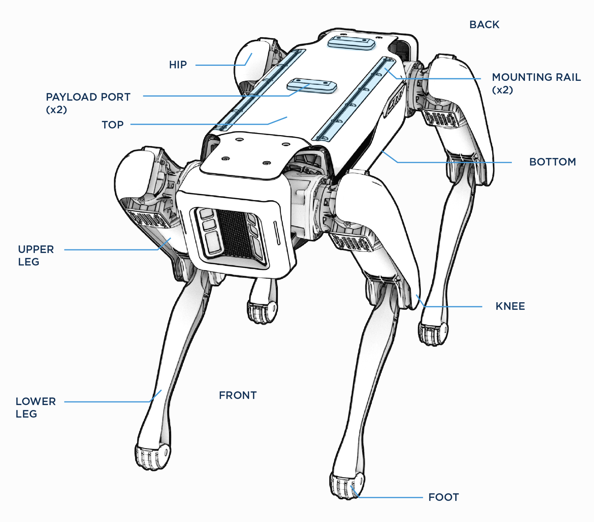
Mounted to Spot body rails using M5 hardware and sliding T-slot nuts; powered through Spot’s internal payload port.
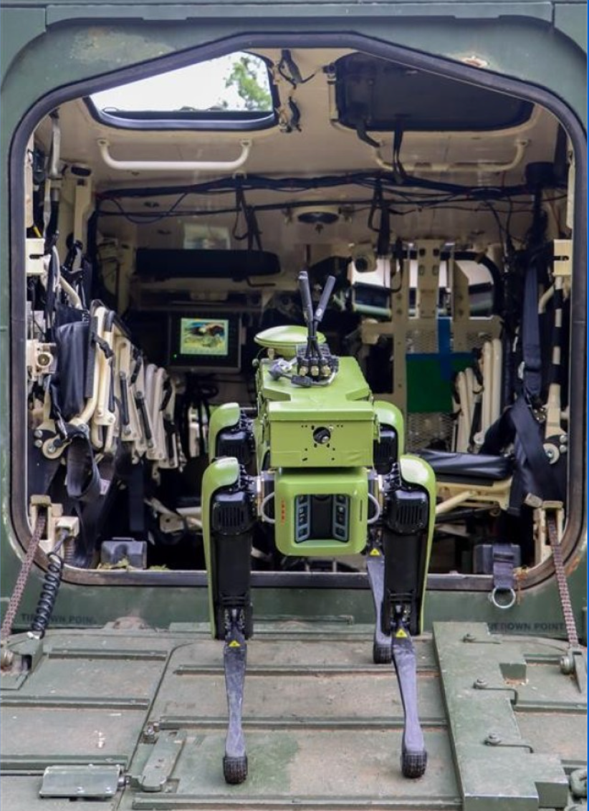
Vehicle-mounted hardware, modular sensor architecture, fabrication drawings, and field serviceability
Created SolidWorks designs, sheet-metal parts, laser-cut plates, and multi-part assemblies for a Polaris Ranger XP 1000 test bed used to collect field data and support hardware testing.
Worked directly with shop-floor fabricators to create manufacturable designs, selecting materials, plate thicknesses, and fabrication methods while producing detailed files for laser-cut parts, formed sheet metal, and welded assemblies.
Owned the full build cycle from concept through installation: ideation, CAD, iteration, manufacturing drawings, fabrication support, coating/paint coordination, hardware selection, and final integration onto the vehicle.
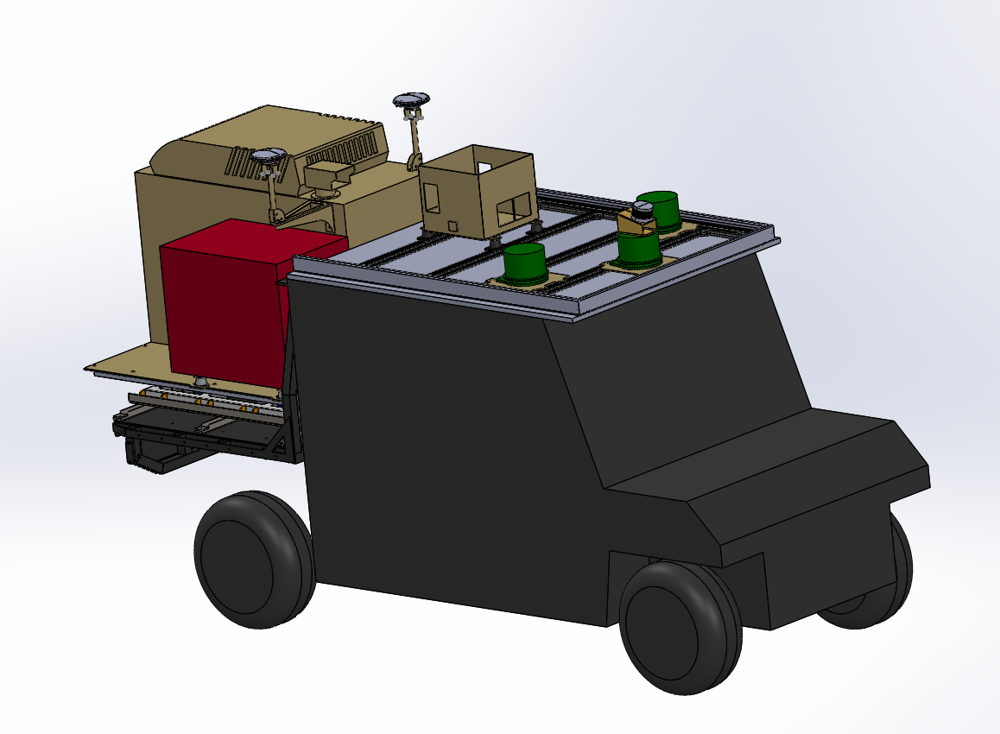
Designed a modular T-slot rail system that allowed crossbars and mounting plates to be loosened, repositioned, and reconfigured as hardware needs changed during development.
Designed a multi-piece foldable GPS mounting assembly with a trussed support and pinned hinge mechanism that locked in deployed and stowed positions for testing and transport.
Designed a custom mounting plate and isolation system to install a 9 kW generator onto the Polaris bed, using vibration isolators to protect the structure and attached hardware.
Integrated a large electronics enclosure with rooftop air conditioning to protect onboard computers, wiring, and electronics during field testing.
Designed a foldable three-piece workstation assembly inside the vehicle to support field engineering work while folding compactly when not in use.
Created laser-cut mounting plates for roof-mounted electronics and test hardware, enabling fast reconfiguration of sensors, electronics, and support equipment.
Rotordynamics analysis ownership for a $15M centrifugal compressor rig
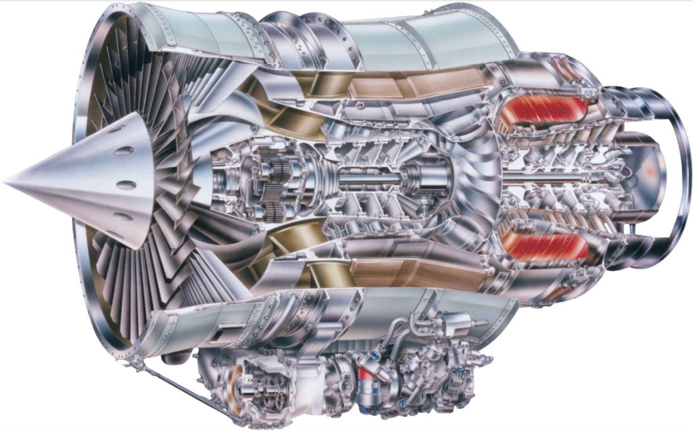
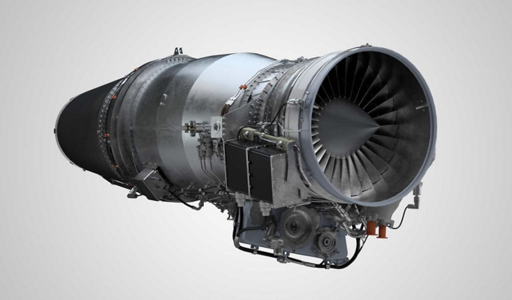
Representative Honeywell Aerospace imagery shown for context. Specific project visuals are omitted because the work is export controlled.
Rig cross-section, shaft stations, bearing locations, bearing housing stiffness, squeeze-film damper parameters, forward-end telemetry hardware, aft-end quill shaft dynamics, and lumped masses for complex components.
Critical speeds, mode shapes, cylindrical/conical unbalance response, excited modes with bearing damping included, bearing loads, and rub clearance risk at impeller and thrust piston locations.
Presented requirements, modeling process, assumptions, results, future steps, and closeout items to 30+ stakeholders and subject-matter experts during the Preliminary Design Review.
Applying rotordynamics to turbopump shaft design and bearing layout trade studies
Supporting turbopump shaft design through rotordynamic and shafting analysis to evaluate critical speeds, mode shapes, bearing loads, and safe operating margins.
Proposed and conducting a study on moving the two LOX-side locating bearings aft of the interpropellant seal to avoid LOX-cooled bearings.
Can the bearing layout be changed while preserving shaft dynamics, rotor stability, and safe operating margins?
Unreal Engine desktop and VR-capable visualization tool for NASA Gateway mission planning, astronaut training, and engineering understanding
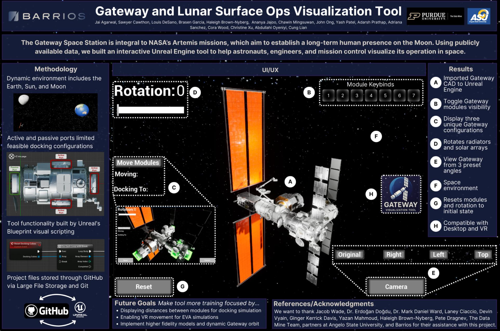
Create an immersive visualization tool that helps astronauts, engineers, and mission control understand NASA Gateway in its operational environment, including module configurations, camera views, solar array articulation, and future lunar surface operations.
Cleaned and prepared publicly available Gateway CAD assets for Unreal Engine, imported the spacecraft geometry, and supported the interactive tool architecture used to visualize Gateway configurations.
Introduced and implemented a low-fidelity Near-Rectilinear Halo Orbit feature using Blueprint scripting and mathematical models inside Unreal Engine to represent Gateway's motion around the Moon.
Prepared public Gateway CAD data for real-time visualization by cleaning geometry, organizing assets, and bringing the spacecraft model into Unreal Engine for interaction.
Used Unreal Engine Blueprint logic to support interactive visualization features, including orbit behavior, module interaction, camera views, and user-controlled system states.
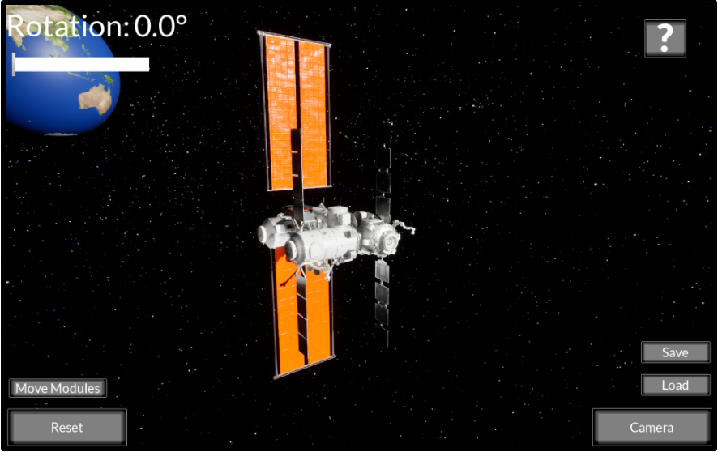
Co-authored “Foundations of a Visualization Tool for NASA Gateway and Lunar Surface Operations,” documenting the tool's architecture, objectives, capabilities, and future XR development path.
Open published paperPresented and demoed the project at the California Science Center during the 2025 IEEE AR/VR in Space: Science and Engineering Conference and was selected to participate on the XR technologies workshop panel.
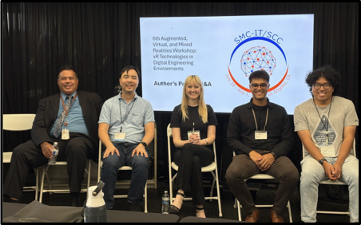
jai.sa.agarwal@gmail.com • (571) 412-8750
This portfolio uses sanitized representations where project details cannot be publicly shown.